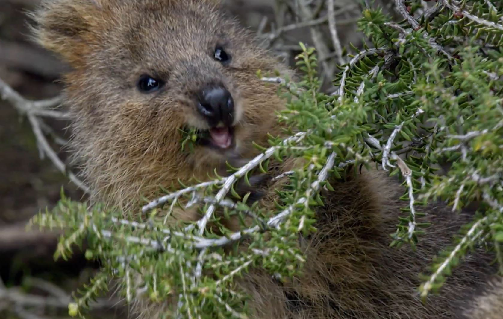
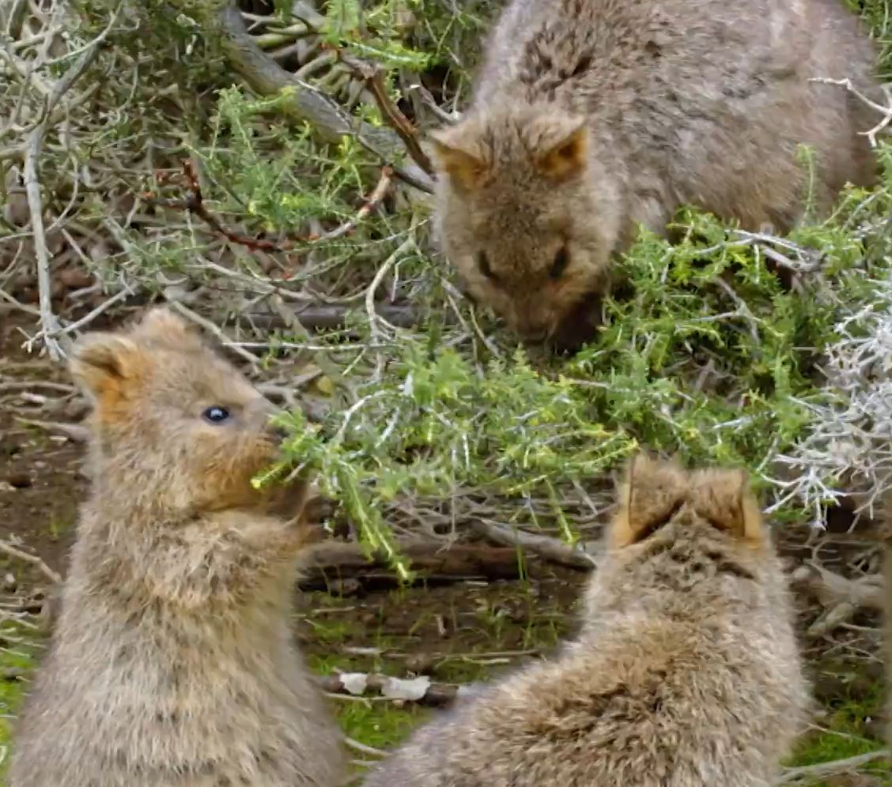
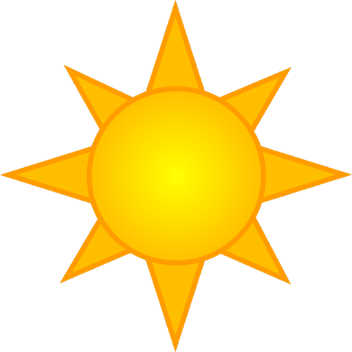
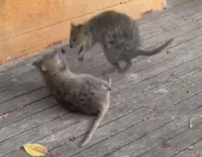
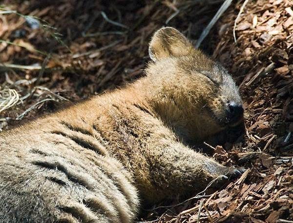

| Time of Day | Activities |
|---|---|
|
Nighttime |
Nighttime: Time to eat! Quokkas are nocturnal, which means they feed by night, browsing for food and moving through tall grass quietly. |
|
Morning |
Morning: Time to eat! Quokkas are nocturnal, which means they feed by night, browsing for food and moving through tall grass quietly. |
 Noontime |
Noontime: Restless! Quokkas typically get along, but on occasion they may fight, especially to get treats from human visitors and to get the best napping spot on a hot day. |
|
Evening |
Evening: Back to napping, it's hot out! The quokkas is capable of bearing high temperatures up to 110 F, due to its thermoregulatory abilities. However, it can still get dehydrated. |